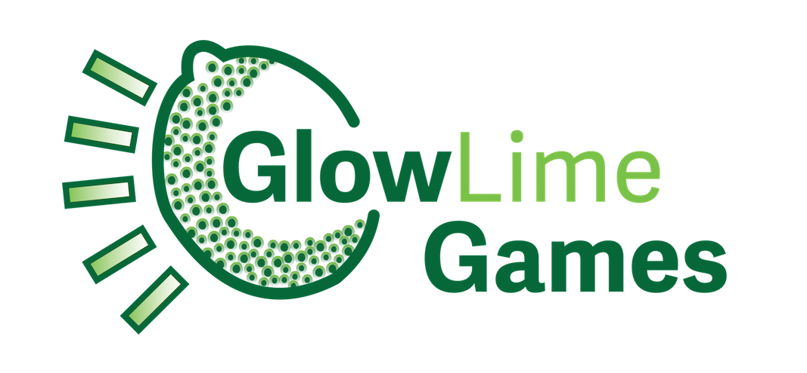

When I began with game development, I was a gameplay programmer on a single game. Three semesters later, I worked three different developer roles simultaneously: gameplay engineer for Fay Games, producer for Lex The Wizard, and lead programmer for Pirate Squabbles. Game development has becoming an increasingly demanding part of my curriculum. This is in parallel with the demands of industry, but most professional game developers are not full-time college students.
Interdisciplinary Game Studio: Fall 2014
TA for Women in Game Programming
Interdisciplinary Game Project
Interdisciplinary Game Studio: Spring 2016
Independent Study - Gameplay Engineer at Fay Games
Independent Study - GlowLime Games Managment and Collaborator Study
Trailer, Word Snack HD: Interdisciplinary Game Studio (F14)
Web Build, Inside: Interdisciplinary Game Project
Pirate Squabbles Site: Interdisciplinary Game Studio (S16)
Game Development GlowLime Games
GlowLime Games is a student game development studio serving the Five Colleges.
I founded it alongside a group of student managers from around the Five Colleges.
Together we setup our organizational structure and created an operating agreement.
We've hosted game development events on the campuses, attended networking conventions,
and managed five student game projects. Overall, GlowLime is poised to promote more
game development opportunities for students. I've spent a great deal of my time during
my second year of Division II working on it, and I believe it will make an excellent
Division III project.

Alongside our Technical Department: Eddie Pantridge and Grace Barrett-Snyder, I've spent
a lot of time developing and polishing our website:
My first internship in games was the MassDiGI Summer Innovation program.
This program was full-time during the Summer of 2015.
I worked as the producer and a programmer on a team of seven students.
Over the course of 11 weeks, we developed a mobile game: Crafting Life
The two following internships were through developers I'd met during the summer program.
The first was as the web developer for a small team of developers who worked on the
banner of Mustachio Games to build a turn based strategy game: Red Survivor
. The second internship was for Petricore Games, a independent studio that started out
of MassDiGI and its summer program. During my time at Petricore, I contributed to an update
to their published title Mind the Arrow